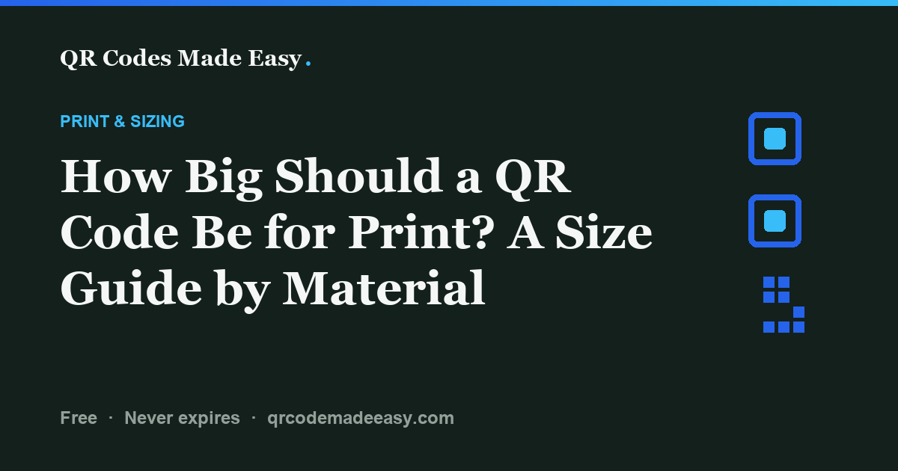

How Big Should a QR Code Be for Print?

There is no single QR code size that works for every print job. Start with the scan distance, allow enough space for the pattern and its blank margin, and test a printed proof. The common distance ÷ 10 rule is a planning shortcut, not a scan guarantee or a QR standard requirement.
Need a starting estimate? Use the print-size calculator, then work through the before-you-print checklist.
Choose a starting size, not a promised scan distance
A scanner must distinguish the small squares, called modules, in the pattern. Camera focus, lighting, contrast, print quality, and how much data the code contains all affect that task. A tiny code may work in one setup and fail in another.
For an initial layout, try pattern width ≈ intended scan distance ÷ 10, using the same units. Then allow extra room around that pattern for its quiet zone. This is a rough design heuristic. It does not replace testing, and 2 cm is not a universal technical minimum.
Start with where someone will actually stand or hold the piece. A menu at arm's length and a poster across a room need different layouts. For a very small label, ask your printer about module size and print quality rather than shrinking the image until it fits.
Worked distance examples for your layout
These are illustrative calculations, not measured scan results or recommended minimums for every device. The width column refers to the pattern before adding its blank margin. If your exported image already includes that margin, its overall width must be larger.
| Example placement | Assumed scan distance | Starting pattern width |
|---|---|---|
| Handheld card | 20 cm | 2 cm |
| Menu at the table | 40 cm | 4 cm |
| Counter sign | 60 cm | 6 cm |
| Poster with a place to stop | 100 cm | 10 cm |
Use the space you actually have, not the label on the material. A counter sign read from 20 cm needs a different starting layout from one behind a deep counter. For larger signs, provide a safe place to stop and scan; do not design around a driver using a phone.
Choose enough pixels for the final printed size
Use SVG when your printer or design software accepts it. Its vector pattern can scale without the fixed-pixel limit of a PNG. That does not make any physical size scannable: the pattern can still be too small, crowded, or poorly printed.
For PNG, ask your printer for the required image resolution. If the job calls for 300 pixels per inch, the calculation is image pixels = printed image width in inches × 300. A 1-inch image needs 300 pixels across; a 2-inch image needs 600; a 4-inch image needs 1,200. These examples describe raster resolution, not a promise of decoding.
Printer DPI and image pixels per inch describe different things, even though print workflows often use “DPI” for both. Follow the printer's specification, export at a suitable size, and avoid enlarging a small screenshot. PNG avoids the edge artifacts that lossy JPEG compression can introduce. The generator exports PNG and SVG.
Dense patterns and logos need extra care
More encoded data or a higher error-correction setting can require more modules. At the same overall print size, those modules become smaller. A shorter URL you control can help, but removing a character does not always reduce the QR version. Do not trade away a stable destination simply to make the text shorter.
A Wi-Fi code with long credentials or a detailed contact card can be denser than a short website link. Test the actual payload, not a short sample that only resembles it.
A logo covers part of the pattern. DENSO WAVE describes error-correction capacity in terms of codewords, not a safe percentage of image area. High error correction is not permission to cover 30% of the square, and a centered logo can still cover important patterns. Start without a logo when space is tight; see the logo guidance before adding one.
Include the blank margin in your layout
A standard QR code needs a clear margin at least four modules wide on each side. DENSO WAVE's code-area guidance explains this requirement. Keep the margin light and empty; do not crop it or place text inside it.
A worked example: 30 mm overall is not 30 mm of pattern
Suppose a code has a 29-module-wide pattern and a four-module margin on each side. Its total width is 29 + 4 + 4 = 37 modules. At 30 mm overall, each module is about 0.81 mm, each side margin is about 3.24 mm, and the pattern is about 23.51 mm wide.
This is a geometry example, not a phone test. It shows why measuring the full image and measuring only the dark pattern give different answers. Preserve the included margin when placing the downloaded image.
Test the finished piece before ordering
- Check the actual export. Scan the downloaded PNG or SVG rendering and confirm the intended link or action.
- Print one proof at the final size. Check that the print dialog has not shrunk the layout. Measure the image on the paper.
- Test the real placement. Use the actual lighting, scan distance, material, and frame or stand. Glare and curves can change the result.
- Try more than one phone. Check both recognition and the destination. For Wi-Fi, confirm joining; for a document, test guest access.
- Change one thing and repeat. Increase space, simplify styling, improve contrast, or change placement when the proof is unreliable. Keep a readable fallback.
Download the one-page print checklist (PDF) to record the size, distance, phones, and fixes. Prefer an online version? Read and print the checklist.
If the code still fails, start with the troubleshooting decision table. For a guest-network sign, place your PNG in the free Wi-Fi template.
Sources and limits
Technical references: DENSO WAVE on symbol area and margins and error correction. The distance examples and margin calculation above are worked examples. They are not physical-device or printer test results.
FAQ
How big should a QR code be on a business card?
Choose a size for the expected close-up scan distance and the actual pattern density. A 2 cm pattern can be a starting layout choice, not a universal minimum. Allow its blank margin and test the printed card.
What is the smallest a QR code can be and still scan?
There is no single minimum physical size for every QR code, camera, and printer. Module size, density, contrast, print quality, and scan distance all matter. Test the actual printed code rather than relying on a fixed minimum.
What size should a QR code be on a flyer or menu?
Start with the intended scan distance. For example, a 40 cm distance gives a 4 cm pattern using the rough distance-divided-by-10 heuristic. Add the quiet zone, then test the finished piece; the calculation is not a guarantee.
What resolution should a QR code image have for printing?
Follow the printer’s specification. At 300 pixels per inch, a 2-inch-wide image needs 600 pixels across. SVG avoids a fixed raster resolution when the printer accepts it, but neither format guarantees scanning at every physical size.
Does the print size include the blank margin?
Check which measurement you are using. This guide’s distance examples describe the pattern without its margin. The exported image includes the margin, so its overall printed width is larger than the pattern alone.
Why will my printed QR code not scan?
Check whether the phone recognizes the pattern first. If not, inspect size, contrast, margin, styling, and the finished surface. If it recognizes a link but the page fails, check the destination and access permissions.
Make your code, then test the proof.
Free PNG and SVG downloads. No account or subscription.
Build your QR code